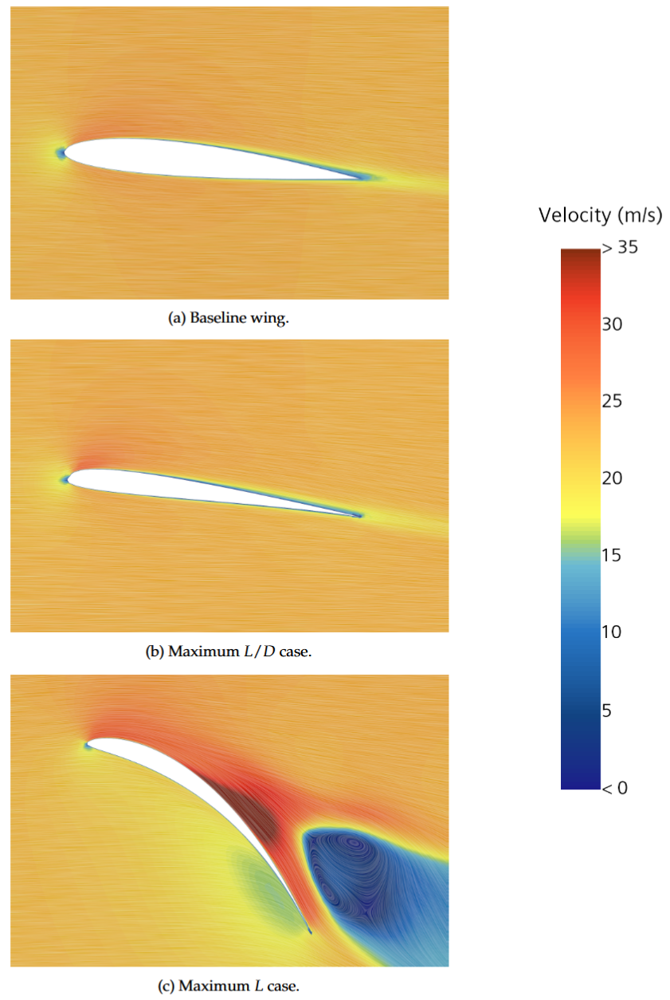

Simulation Setup
- Constructed a parametric SolidWorks model and half-car STAR-CCM+ RANS simulation at 23 m/s, incorporating moving ground, rotating wheels, and a near-wall resolution of y⁺ < 1.
- Verified the CFD setup through mesh and domain sensitivity studies.
- Benchmarked turbulence models against wind-tunnel data, with k–ω SST providing the best balance of accuracy and computational cost.

Pipeline Setup
- Implemented pitch-constrained Bayesian optimisation using Meta’s Ax platform, optimising mission energy from drag, solar area and rolling resistance.
- Developed a Python orchestration system linking the optimisation workflow to the Iridis 6 HPC cluster, allowing simulations to run, pause and resume autonomously.

Pipeline Validation
- A Pareto front study on a low-aspect wing was conducted to validate the framework robustness and optimisation implementation.